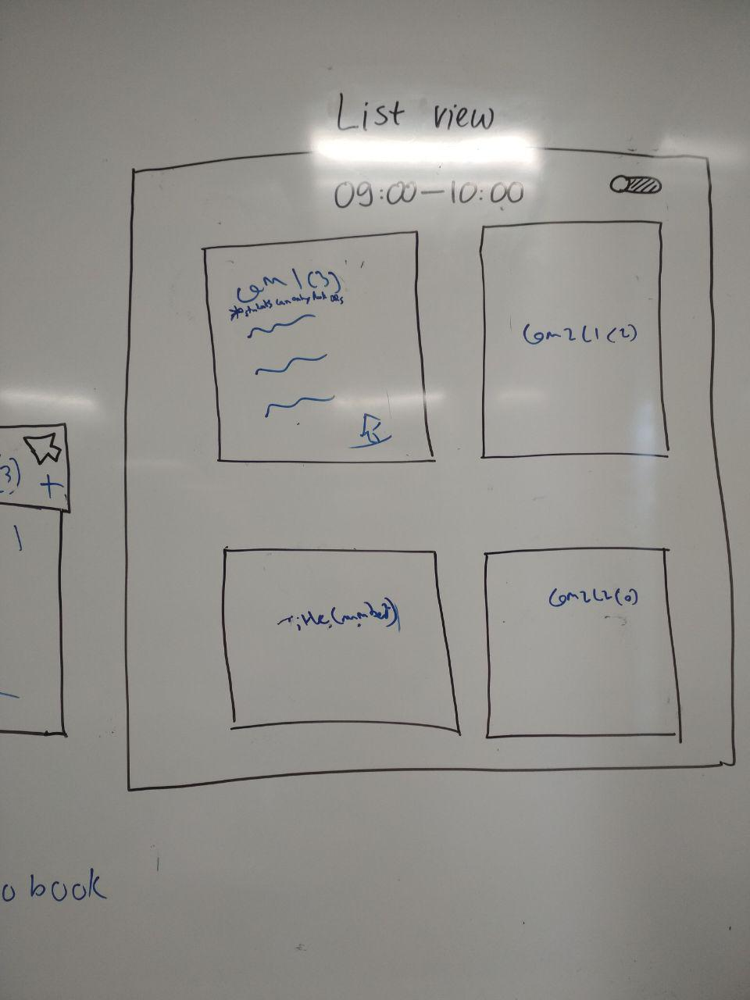
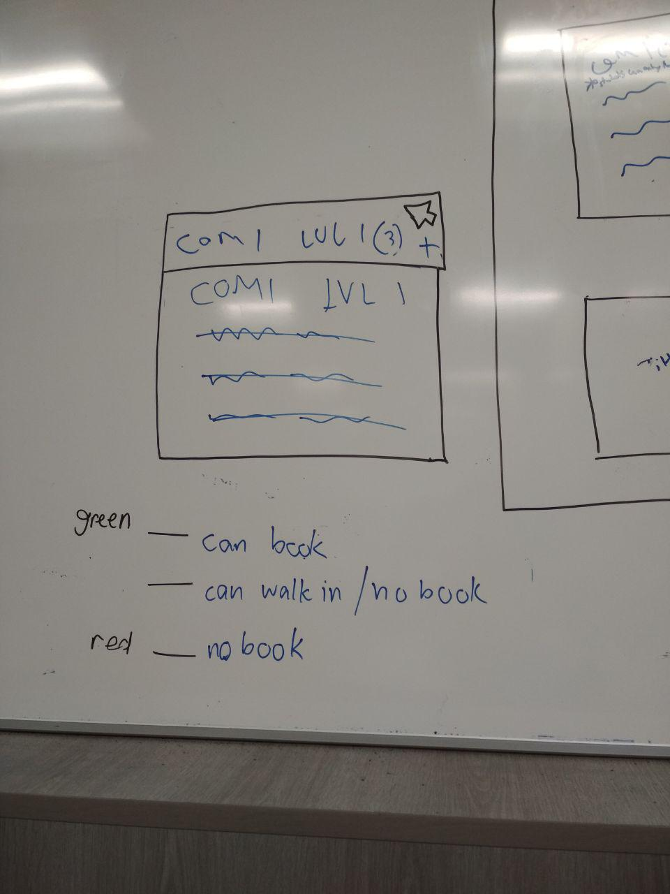
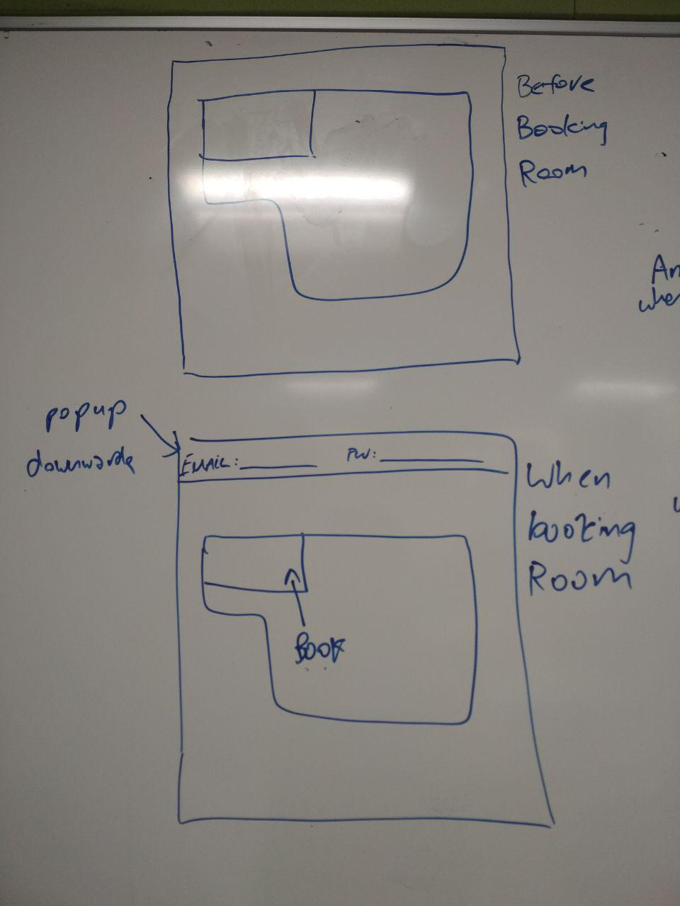
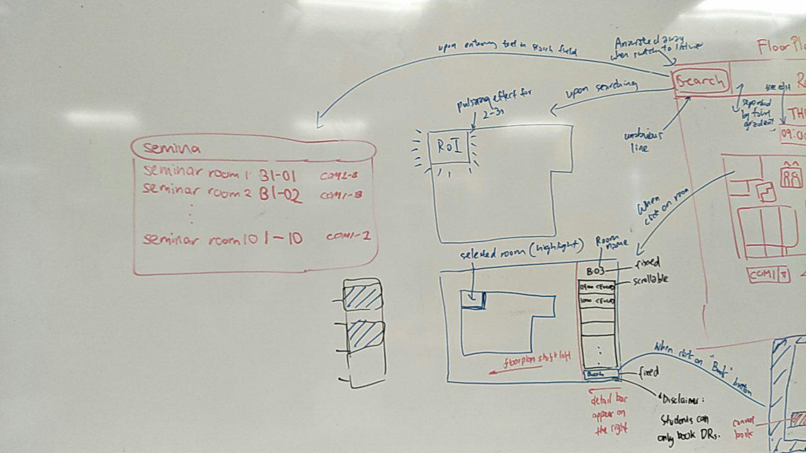
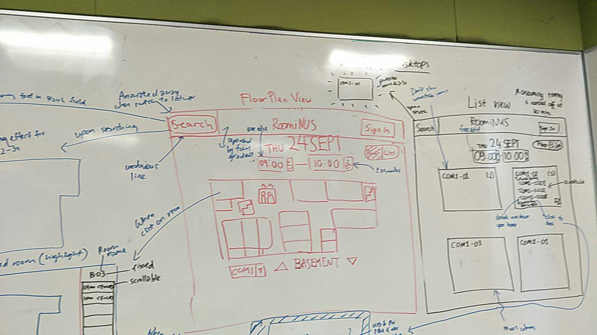
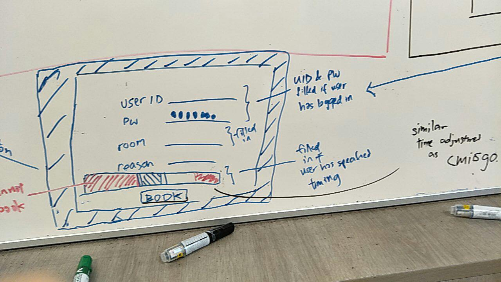
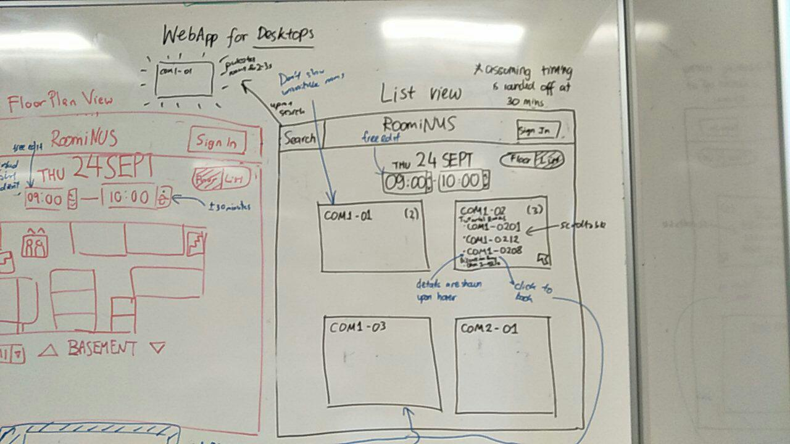

Overview

Overview
The purpose of this ears later in the future.
My Role
Everyone participated ype with Invision to bring screens to life.
Process
As a big "Mega team," journey based on our target customer types.
Duration
August 22, 2018 - Present
Project Team
Koh Lewis
Fong Wei Zheng
Lim Yan Hui, Victoria
Anthony Halim
Tools
Balsamiq Mockups
HTML/CSS/JQuery/JavaScript
Links
Identifying Problems
We first started by visiting the site and finding problems. One way we did this is we went through the checklist of Nielson's Heuristics and identified places where the current website violated some principles. These are parts of the website where we can improve visibility and functionality, without worrying about specific user use cases. We also took note of places where the heuristics were adhered to, as reference for which parts are good and can be kept similar.
User Study
We decided to go with user interviews to find out more about the issues our target groups faced. We gathered data from a variety of users, including current students, lecturers, and teaching assistants. We had a template of questions to ask, and a majority of the interviews were done face-to-face, allowing us to expand on pain points brought up by the interviewee and going into further detail where necessary.
After transcribing the interviews, we compiled the data and created personas to represent the users and their worries. After constructing the personas, we constructed user journeys to showcase how the user currently attempts to tackle their issues. This gives us a view of the problem points in their current process, and gives us a clear focus of where we can improve their experience.
Prototyping
We each created our own prototype based on the feedback from the user interviews. I tried to make mine simple because I wanted to highlight the main feature of our site, which I imagined as a quick and simple way to view the rooms which are available. There is little to no colour outside of the map, pulling the user's attention to it. The colour used for avaiable or not available contrast highly and adhere to the standards of real life.
After creating the prototype, we compared prototypes with each other and discussed the pros and cons of each one. We listed each things we liked from each one and considered what features we needed in the final version. It was tough to decide what was important, as different people said they wanted different things, and some of the requests were originally outside of the scope of our project. This made us consider how much we could add without overloading the user, and how to display it in a organised manner.
Wireframing
After noting what we wanted in our final version, we went about designing it. We drew on the whiteboard, to allow for quick revision and iteration. We went through the intended user journey through our website, and tried to make sure that it was simple to navigate and clear in functionality.
      